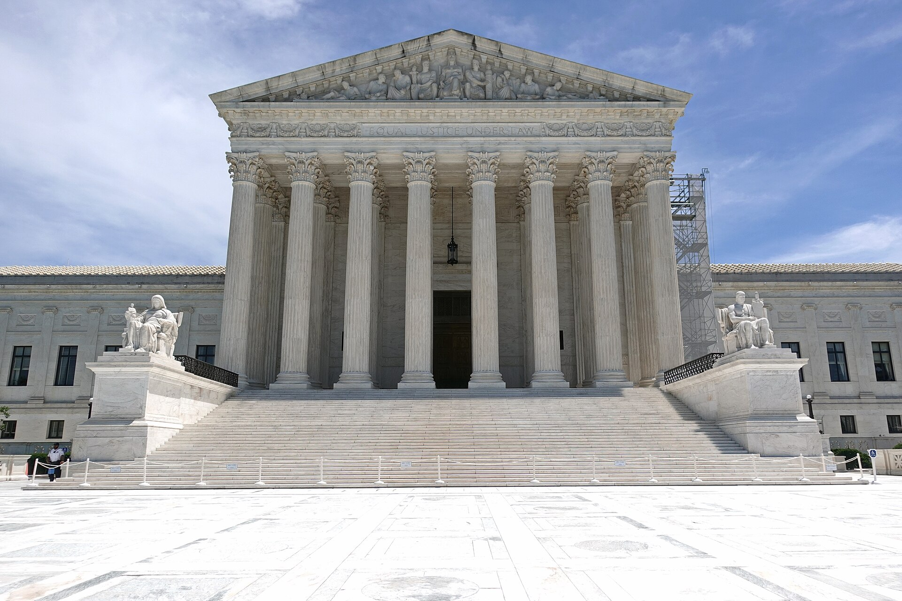

Vol. I · No. 106 · Wednesday, September 9, 2026 · 15 items · ~16 min read
A sovereign fund's golf tour files Chapter 11, a machine claims a Millennium Prize and a mathematician says it took his line of attack, and twelve governments draw a trade border through the West Bank.
Entertainment & EASL · Newark · September 8
LIV Golf files Chapter 11, and the fund that spent $5bn building it becomes its lender
Dustin Johnson at a LIV Golf event in Boston. He is listed among the tour's largest unsecured creditors, owed $5.49m. — Wikimedia Commons
LIV Golf filed for protection in the United States Bankruptcy Court for the District of New Jersey on Tuesday, four years and more than $5 billion after Saudi Arabia's built the tour to break professional golf's single-circuit structure. The petition estimates liabilities between $500 million and $1 billion against assets of $100 million to $500 million. It arrives with a already signed with Credit, which is exploring what the company calls a recapitalization transaction.
The creditor list is the document that will be read. Jon Rahm sits at the top of the unsecured schedule, owed $7.47 million in past-due player participation payments. Bryson DeChambeau is owed $5.77 million, Dustin Johnson $5.49 million, Cameron Smith $4.83 million. Below the players are IMG Media at $3.2 million, the state of Louisiana at $1.22 million for a cancelled New Orleans event, and Fresh Tape Media at $1.2 million, which had already sued over unpaid invoices. The PIF, which said in April it would end funding at the close of the 2026 season, will provide $49.6 million in subject to court approval.
What the company wants on the other side is a smaller league that pays for itself. Chief executive Scott O'Neil described a 2027 season with fields expanded to 75 players from roughly 57, Monday qualifiers, and movement toward a player-majority equity structure; the company will also seek recognition of the Chapter 11 in England and Wales. Gene Davis, an adviser to the board, said the directors "reviewed all available options and believe today's actions reflect the most responsible path forward."
"This process gives us the structure and time to pursue a landmark transaction."
— Scott O'Neil, LIV Golf chief executive, September 8
Artificial Intelligence · September 8
OpenAI says it proved Navier-Stokes. An NYU mathematician says it took his line of attack.
OpenAI said this week that an internal, unreleased model running roughly ten thousand agents produced a proof of in about eighty-eight hours, at a cost the company put in the millions of dollars. The effort began on September 1, after researchers heard rumors that two problems had fallen.
Tristan of NYU and Levent Alpöge, a research scientist at Anthropic, say they had worked the related terrain for about a year and broke through around August 15. On September 8 they released a -verified proof of finite-time blowup for the three-dimensional incompressible Euler equations. Buckmaster says that on a September 6 call, OpenAI researchers told him they were about to claim a competing result along the same line of attack, and offered him two options: co-publish with the model credited, or publish alone crediting an OpenAI model while omitting Alpöge. He declined both. of OpenAI called the allegations false and inflammatory.
The World · London · cross-spectrum LLCLRR
Twelve governments move against settlement trade, and Israel closes Britain's Jerusalem consulate
Foreign Secretary told Parliament on Tuesday that Britain will ban imports of all goods from Israeli settlements in the West Bank and East Jerusalem, and will ban the provision of services to those settlements, naming financing, construction, infrastructure, real estate and advertising. The package also refuses further arms-export licences and bars UK marketing events for settlement homes. It takes effect in six to nine months. Canada and France announced matching import bans the same day, and a joint letter added Denmark, Finland, Iceland, Ireland, Norway, Poland, Portugal, Spain and Sweden, twelve governments in all.
Miliband told the House there is "ethnic cleansing of Palestinians in areas of the West Bank, perpetrated by settler terrorists." Israel answered within hours: it closed the British Consulate in Jerusalem, withdrew UK representatives from the International Gaza Support Center in , halted British training of Palestinian Authority security forces, and barred entry to twelve British politicians. Foreign Minister said "measures against Israel will not go unanswered." Finance Minister Bezalel Smotrich called for expelling the British ambassador. Secretary of State Marco Rubio said the United States would "obviously" not join.
Artificial Intelligence
A security advisory, a record European round, and an agent authorised to bargain
Artificial Intelligence · Fort Meade · September 8
Three US agencies name six Chinese labs as systematic distillers of American models
The National Security Agency at Fort Meade, Maryland, which issued the advisory jointly with CISA and the FBI. — Wikimedia Commons
The National Security Agency, and the FBI issued a joint advisory on Tuesday accusing six Chinese firms of running industrial-scale campaigns against American frontier models since at least late 2024. The named companies are DeepSeek, Moonshot AI, Alibaba, MiniMax, StepFun and . The agencies say the firms extracted billions of tokens across millions of exchanges from Claude, GPT, Gemini and Grok variants.
DeepSeek is accused specifically of distilling to build R1 in early 2025, and the advisory calls the company's widely cited $5.6 million training-cost figure misleading because it excludes the cost of the distilled data. Moonshot is accused of similar activity from mid-2025 to improve Kimi's coding, mathematics and reinforcement-learning performance. The recommended countermeasure is the striking part: the agencies advise providers to serve degraded models to suspected distillers without telling them, so the customer cannot detect the block and route around it.
Artificial Intelligence · Paris · September 8
Mistral raises €3bn at a €21bn valuation, and Luxembourg takes a seat on the cap table
Mistral closed a €3 billion Series D on Tuesday at a post-money valuation above €21 billion, the largest equity round a European technology company has completed. Samsung Electronics led, with the Scaleup Europe Fund managed by EQT and PSG Equity as co-leads. Advent, funds managed by BlackRock and the Grand Duchy of Luxembourg came in new; , a16z, , NVIDIA and returned.
The company framed the raise as funding a pivot toward sovereign infrastructure rather than model development alone, positioning itself as a European operator of compute as much as a laboratory. That reframing is what justifies a round of this size: an infrastructure business absorbs capital in a way a research group does not.
Artificial Intelligence · Menlo Park · September 8
Meta ships an agent it says will negotiate on your behalf
Meta launched Muse on Tuesday, a personal agent rolling out in the United States on iOS, Android and the web, with support for the company's glasses to follow. It is restricted to users eighteen and older. Meta says it can open a browser, fill out forms, buy tickets, schedule appointments and negotiate for the user. The free tier runs to a hundred million a week by Mark Zuckerberg's account, with paid tiers at $20 and $100 a month.
Each user's agent and data run inside a dedicated virtual machine, and Meta says Muse data is not shared with its advertising systems. The is a security architecture as much as a privacy one.
Markets & Deals
A thin calendar into a heavy tape, an $11.75bn castings deal, and two structures worth reading
Markets & Deals · New York · September 8
The ten-year prints back through 4.8, and the post-Labor Day calendar is the thinnest in six years
The Eccles Building in Washington. Thirty-year yields held around 5.25 percent as the long end sold off again on Tuesday. — Wikimedia Commons
The ten-year Treasury yield ticked back above 4.8 percent on Tuesday, its highest since late 2023, with the thirty-year around 5.25 percent, as climbed above $99 a barrel following Houthi strikes on Saudi energy infrastructure, and Canada's retaliatory tariffs took effect. The Dow fell 628.18 points, or 1.18 percent, to 52,786.07; the S&P 500 lost 0.58 percent to 7,673.52; the Nasdaq gave up 0.32 percent to 26,421.41.
Eighteen companies brought investment-grade bonds into that tape, the quietest post-Labor Day session in six years, among them UBS AG, Bank of Montreal, a private-credit fund managed by Management, and GSK. GSK is marketing a six-part dollar offering targeting roughly $6 billion to refinance the $11 billion behind its $10.6 billion acquisition of Nuvalent, drawn at $9.9 billion on July 13 and closed two days later.
Markets & Deals · Evendale · September 8
GE Aerospace pays $11.75bn for a castings maker, its largest deal since the breakup
GE Aerospace agreed before Tuesday's open to buy Consolidated Precision Products from and Berkshire Partners for $11.75 billion, $7 billion of it in cash and the rest in new debt. CPP is a Cleveland maker of engineered and sub-assemblies with roughly 6,600 employees across more than twenty facilities. It is GE Aerospace's largest transaction since the three-way split of 2024, and the largest deal announced anywhere in the window by enterprise value.
Evercore and PJT Partners advised GE, with Paul, Weiss as counsel. Morgan Stanley and Guggenheim Securities advised CPP, with as counsel. The parties expect to close in the second half of 2027.
Markets & Deals · San Diego · September 8
Qualcomm hands Amazon a warrant on 25 million shares to win a $60bn commitment
said on Tuesday that Amazon may buy up to $60 billion of its AI data-centre chips and related products and services through 2036, centred on custom accelerators. The two will also co-develop a 1.6 terabit-per-second for hyperscale data centres. Qualcomm shares rose on the announcement; it is the company's first major Western hyperscaler customer for AI infrastructure.
The consideration runs the other way as well. Qualcomm granted Amazon warrants to acquire up to 25 million of its shares at $161.26 each, roughly $4 billion of stock, with 3.75 million shares vesting immediately against Amazon's initial purchase commitments and the rest tied to further volume.
Markets & Deals · September 8
Robinhood's AMC tokens are Jersey debt, and AMC wants them stopped
Robinhood's own quarterly filing this year identifies its tokenised AMC "Stock Tokens" as debt securities issued by an affiliate in , the Channel Island, and not registered under United States securities laws. , AMC's chief executive, called the product contemptible, outrageous and disgusting, and demanded Robinhood halt trading. Robinhood refused. AMC shares rose about five percent on the fight and then gave the move back. Matt Levine took the structure apart in Bloomberg's Money Stuff column on Tuesday.
A holder of a Stock Token gets exposure to the price and nothing else. No vote, no dividend claim, no standing as a shareholder against the company whose name is on the instrument, and no ownership filing at any size.
Law & the Courts
A third election emergency application in a week, and a single justice ends a map fight
Law & the Courts · Washington · cross-spectrum LLLCR
DHS asks the Court to revive its citizenship-verification database before the midterms

The Supreme Court, which has now taken three election-related emergency applications inside a week. — Wikimedia Commons
Solicitor General docketed an application on Tuesday, Department of Homeland Security v. League of Women Voters, No. 26A308, asking the Supreme Court to stay Judge Sparkle Sooknanan's June 22 ruling in the District of Columbia barring use of the modified database. Sooknanan held the modified system violates the , the Social Security Act and federal administrative law. A divided D.C. Circuit panel refused a stay pending appeal but expedited the case.
Sauer leads with , arguing the challengers have none, and warns that reversal on the ordinary schedule "would come too late for the 2026 midterms." DHS says the system has verified citizenship for more than 65 million voters across 26 states and flagged 28,635 potential noncitizens. Chief Justice Roberts ordered a response by 4 p.m. on September 15.
Law & the Courts · Washington · cross-spectrum LCLR
Kavanaugh denies Missouri's map, and the 2022 lines govern November
Justice Brett Kavanaugh, sitting as for the Eighth Circuit, denied the stay in Hoskins v. von Glahn, No. 26A304, on Tuesday afternoon without referring it to the full Court. Missouri Secretary of State had sought to use HB 1, the map signed by Governor Mike Kehoe in September 2025 that would give Republicans seven of the state's eight House seats. The denial restores the 2022 map for November, even though HB 1 governed the August primary.
The Missouri Supreme Court held unanimously on September 3 that a referendum petition carrying more than 300,000 signatures was legal, sufficient and timely, meaning HB 1 never took legal effect. Hoskins argued under the that only a legislature may set the times, places and manner of federal elections. Richard von Glahn answered on , and noted that Hoskins had never raised his federal arguments below.
The World
A 1930 tariff provision nobody has used, invoked and answered
The World · Ottawa · cross-spectrum LLC
Canada's retaliation lands on $20bn of American goods
Mark Carney and Donald Trump in October 2025. Talks collapsed in late August and the tariffs took effect Tuesday. — Wikimedia Commons
Canada's retaliatory tariffs took effect on Tuesday against roughly C$27.6 billion, about US$20 billion, of American imports, at rates of 15, 25 and 50 percent depending on category. The list runs through steel, aluminium, dairy, appliances, motorcycles, agricultural equipment, pulp and paper, and electronics. The trigger was Washington's decision, after talks collapsed in late August, to impose 50 percent tariffs on about $20 billion of Canadian goods under , close to five percent of Canada's exports to the United States.
Prime Minister said the measures are "meant to protect Canada, not escalate" the conflict, describing a dollar-for-dollar response. Ottawa paired them with a C$7.5 billion support package for businesses and workers exposed to the American duties.
Entertainment & EASL
A merger clock running against a procedural motion, and a remake dated at two prices
Entertainment & EASL · Washington · September 8
Iowa and Montana press the Court to take the Paramount-Warner fight on original jurisdiction
The Paramount lot in Hollywood. The $110.8bn Warner Bros. Discovery acquisition has cleared the Justice Department and 68 foreign regulators. — Wikimedia Commons
Iowa Attorney General and Montana Attorney General Austin Knudsen filed a reply on Tuesday supporting their motion to expedite review of a against California and eleven other states. The target is the twelve-state antitrust suit, led by California's Rob Bonta, seeking to block Paramount Skydance's roughly $110.8 billion acquisition of Warner Bros. Discovery. "Since even Respondent States tacitly agree that the burdens of expedition are slight," the reply argues, "the modest acceleration to the timeline should be granted." Iowa and Montana want responses by September 15 and distribution for the October 9 conference.
The deal has already cleared the Justice Department's antitrust review and 68 foreign jurisdictions. The state suit and a Writers Guild action are what is left. The merger agreement carries its own clock: Paramount owes Warner Bros. Discovery a quarterly of about $0.25 a share for any period unclosed after September 30, and June 4, 2027 is the .
Entertainment & EASL · Kyoto · September 8
Ocarina of Time returns November 5, and Nintendo prices the cartridge above the download
Nintendo used a thirty-minute on Tuesday morning, billed as the Legend of Zelda 40th Anniversary presentation, to date its Ocarina of Time remake to November 5 as a Switch 2 exclusive, with a 40th Anniversary Edition console and themed accessories arriving October 29. A since-deleted Nintendo Australia listing had already put the digital edition at A$94.95, roughly $59.99, hours before the broadcast; the cartridge is expected at $70 under the company's .
The remake carries full voice acting, with reprising Ganondorf from Tears of the Kingdom, a stylised-realism art direction rather than a faithful remaster, and jump and dive mechanics absent from the 1998 original. presented the footage. The Direct also covered licensing with LEGO and Hasbro and further news on Sony's live-action Zelda film.
Compiled by Matthew Yellin · mattyellin.com · Est. May 2026 · A cross-spectrum brief drawn each morning from wires, filings, and the trade press